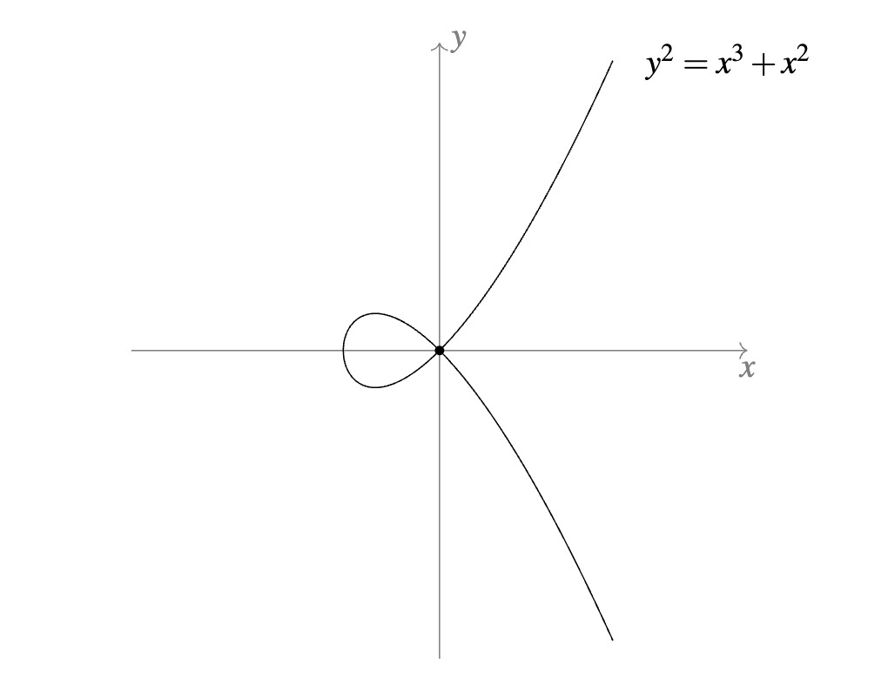

Plane Algebraic Curves
Welcome to the course website for the advanced course on plane algebraic curves at Ross/Ohio 2024. This course is intended as an introduction to classical algebraic geometry for second-year students (i.e. peer mentors) and counselors at Ross.1
Basic information:
- Instructor: Dhruv Goel [gauravgoel@college.harvard.edu]
- Meeting Times and Locations: 4:30 - 5:30 pm on MWF, in Roush 114 (first week only; location starting the second week TBD).
- Office Hours: TBD
- Topics Covered: The course topics will be adjusted based on the backgrounds and interests of the participants. A tentative list of topics can be found below.
- Texts/References: I will type up my own lecture notes. For other references, see the section below.
- Prerequisites: The only real prerequisite is familiarity with the fundamentals of ring/field theory (prime and irreducible elements, ideals, algebraically closed fields). Familiarity with linear algebra and topology will occasionally be useful, but is not required.2
- Assignments and Collaboration Policy: There are no formal assignments, although I will produce weekly exercise sheets. You do not need to turn in solutions, but you are welcome to discuss your solutions with me as well. You are highly encouraged to read the lecture notes carefully and to attempt each problem in the exercise sheets by yourself, having done which, collaboration and discussion with your peers is highly welcome and encouraged.
- Graphing: You are highly encouraged to make full use of wonderful graphing software such as Desmos and WolframAlpha to make your experience in this course more enjoyable.

1. This course is NOT for first-year students at Ross, and first-year students are generally not encouraged to take this course; if you are a first-year student who really wants to sit in, let me and your counselor know and we can discuss your specific situation.↩
2. If you would like to come to this course but are unsure about whether you have enough background, you probably do. Even if you don't, I believe that you will certainly gain something from coming to the lectures, even if you don't understand them fully. You are also welcome to write to me to discuss this.↩
Topics Covered
The current (tentative, possibly slightly ambitious) list of topics I plan to talk about is:
- Affine algebraic curves over an arbitrary field \(k\), coordinate rings, affine changes of coordinates
- Lots of examples (e.g. synthetic constructions, parametric and polar curves), digression on connections to other fields of math (e.g. number theory, complex analysis)
- The interplay between algebra and geometry: irreducibility, reducedness, finiteness of curve intersection using Gauss's Lemma, Nullstellensatz for \(\mathbb A^2_k\)
- Local properties: smoothness, tangent lines/cones, multiplicity of a point, rational functions, local rings, local intersection multiplicity
- Introduction to the projective plane and projective curves, points at infinity, (de)homogenization, projective changes of coordinates
- Classification of affine and projective conics over \(k=\mathbb C\)
- Theorems of Bezout and Max Noether and applications (Cayley-Bacharach Theorem, Pascal's Theorem, Pappus' Theorem)
- Classification of projective cubic curves and introduction to elliptic curves (e.g. associativity of group law)
Further topics (if time permits) might include:
- Topology of real plane curves (connected components, convexity, nesting, Harnack's Theorem)
- Inflection points, polars and Hessians
- Pencils of conics, parameter spaces, solving the quartic equation using algebraic geometry
- More on elliptic curves (Weierstrass normal form, torsion points)
- Divisors and the Riemann-Roch Theorem (and applications)
- More singularity theory: conductors, knots, etc.
Lecture Notes
Lecture notes will be updated after the corresponding lecture. Here is the full file (including exercises), last updated on 07/02/24. Here are the notes sorted by lecture:
- Lecture 1; posted on 06/10/24; introduction
- Lecture 2; posted on 06/12/24; degree I, more examples
- Lecture 3; posted on 06/14/24; parametric curves
- Lecture 4; posted on 06/17/24; affine changes of coordinates, algebraically closed fields
- Lecture 5; posted on 06/19/24; irreducibility I, unique factorization I
- Lecture 6; posted on 06/21/24; Nullstellensatz, irreducibility II, unique factorization II
- Lecture 7; posted on 06/24/24; ideals, irreducible components, degree II
- Lecture 8; posted on 06/26/24; smoothness, multiplicity, tangent lines
- Lecture 9; posted on 06/28/24; derivations, intersection multiplicity
- Lecture 10; posted on 07/01/24; intersection multiplicity, the projective plane
- Lecture 11; to be posted on 07/03/24; [TBD]
- Lecture 12; to be posted on 07/05/24; [TBD]
- Lecture 13; to be posted on 07/08/24; [TBD]
- Lecture 14; to be posted on 07/10/24; [TBD]
- Lecture 15; to be posted on 07/12/24; [TBD]
Exercise Sheets
There will be six of these; one for each week. The exercise sheet for a week will be posted at the beginning of that week, so you can start engaging with the problems as soon as possible. Here are the exercise sheets:
Textbooks and References
Some other useful references at a level similar to that of this course are:
- These lecture notes by Andreas Gathmann for a similar course.
- The first two chapters of Miles Reid's textbook Undergraduate Algebraic Geometry, (legally) available for free here.
- The textbook titled Introduction to Plane Algebraic Curves by Ernst Kunz.
The following are more advanced textbooks suited for a full-scale undergraduate course on algebraic geometry:
- Fulton's textbook titled Algebraic Curves.
- Harris's textbook titled Algebraic Geometry: A First Course. (Disclaimer: I'm slightly biased in my choices, since Harris was my advisor.)
For a much more encyclopaedic but still fairly accessible treatment, I would recommend:
- The book by Brieskorn and Knörrer titled Plane Algebraic Curves.
If you need assistance in accessing any of these references, please do not hesitate to reach out to me.